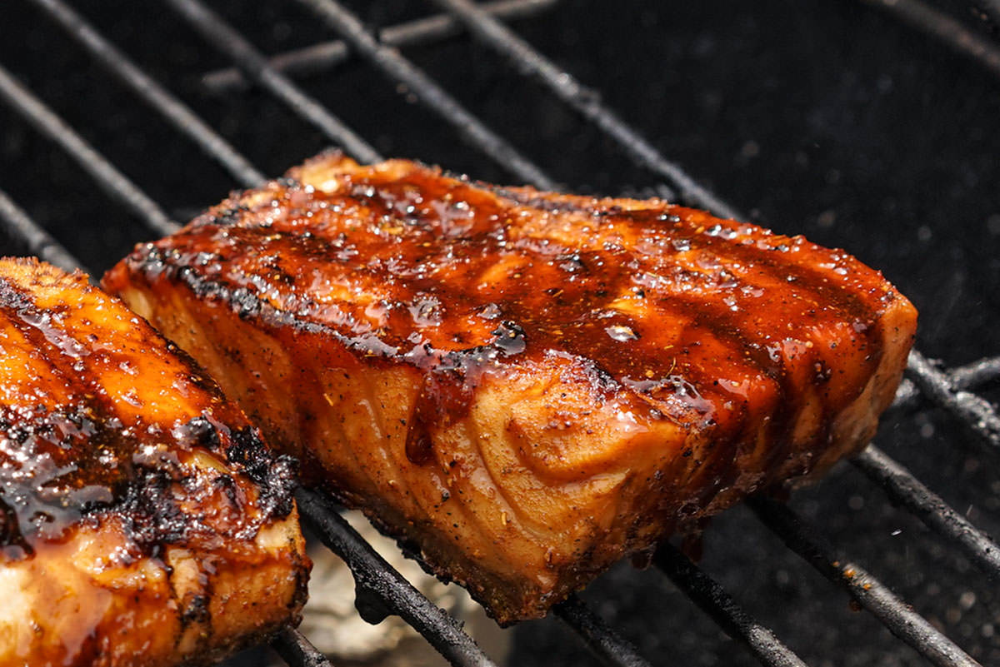
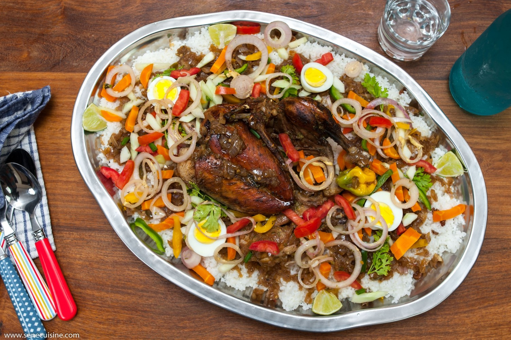

Filet de saumon assaisonné et grillé à souhait, servi avec une sauce au beurre citronné.
Les plats traditionnels sénégalais à ne pas manquer pendant votre séjour.
Du riz parfumé avec des poissons et des lugumes bien frais.

le yassa au poulet avec des oeufs et des tomates.
